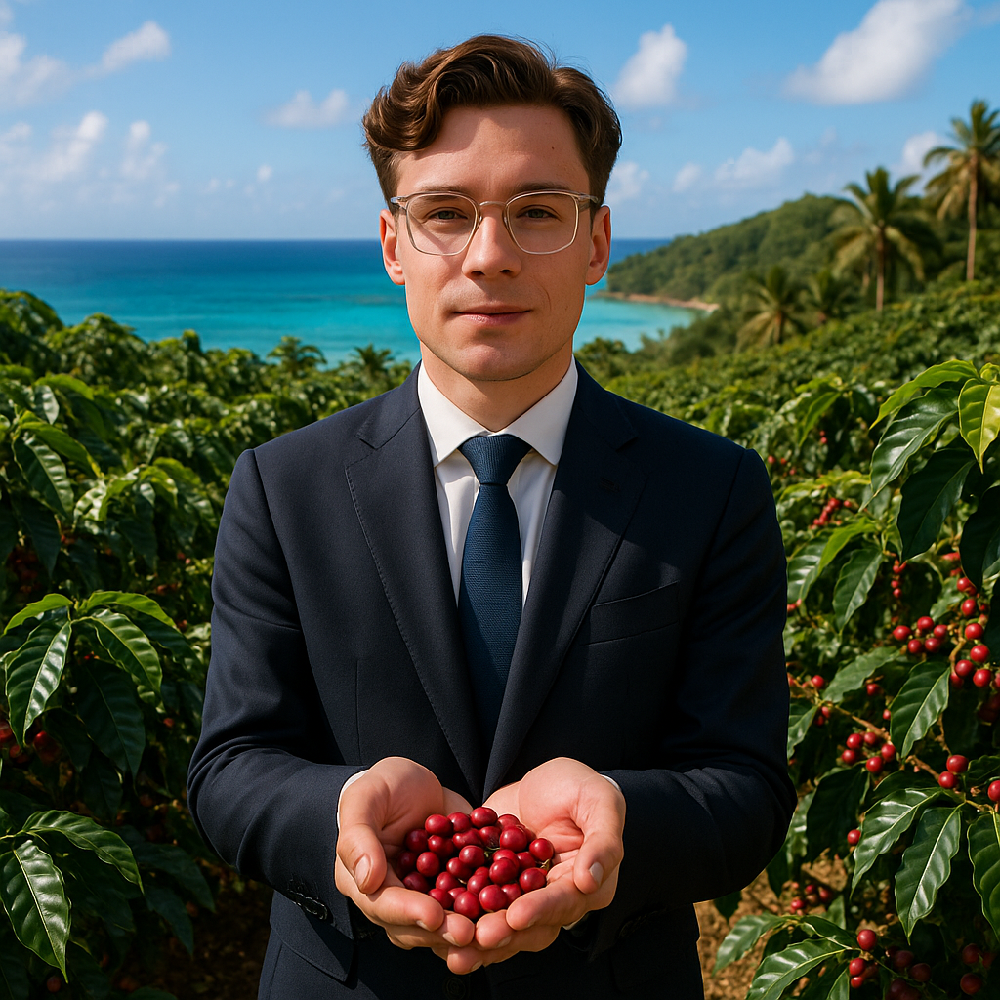

På Kaffekraft är vår största tillgång våra människor. Och bland dem står Svante Sköld fram som en unik bjälte. Han är mer än en kollega; han är bolagets minne, vår kompass i en föränderlig bransch och en inspiratör för en ny generation kaffepassionerar. Här är hans resa.
Svantes kärlek till kaffe väcktes inte på ett kontor, utan ute i fält. Hans resa började för över tre decennier sedan med de första mötena med odlare och uppköpare. Han har rest till odlingsområden över hela världen, från Etiopiens högländer till Brasiliens fazendor, och byggt upp en oöverträffad förståelse för kaffets hela kedja – från jord till kopp. Denna unika bakgrund, där praktisk erfarenhet mötte affärsutmaningar, la grunden för hans exceptionella expertis. Innan han kom till Kaffekraft hade Svante redan byggt ett rykte som en branschledare med både vision och förmåga att exekvera. När vi fick möjligheten att välkomna honom ombord insåg vi genast värdet av att inte bara anställa en expert, utan att investera i ett levande arv av kunskap.
Svantes titel, Senior Advisor of Expert Strategic Guidance and Mentorship, är noggrant vald för att spegla hans verkliga bidrag. Strategisk Vägledning: Svante fungerar som en betrodd strategisk rådgivare för vår ledning. Han utmanar våra antaganden, hjälper oss att se över horisonten och säkerställer att våra långsiktiga planer är rotade i branschens verklighet. Hans insikter är avgörande när vi tar beslut om inköp, produktutveckling och marknadspositionering. Mentorskapsansvar: Kanske är hans viktigaste roll den som mentor. Svante ägnar en avsevärd del av sin tid åt att coacha och utveckla våra talanger. Oavsett om det gäller unga kaffeprofessioner, nya roastmasters eller chefer, delar Svante generöst med sig av sina kunskaper och erfarenheter. Han är den personen man söker upp för att få ett klokt råd, en annan vinkel eller en uppmuntrande peptalk.